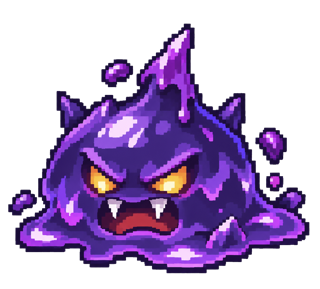

魔物が棲みついた森に、散らばった「数の灯」。
草原・森・遺跡を駆け抜け、古城の門を目指そう。
Ⅰ・風の草原装備中の仲間を読み込み中…
数の灯 0 / 3
報酬見込 0 🪙
CHAPTER 0 · 星屑の森
失われた数の灯

タップでジャンプ敵は踏んで倒す落下＝ゲームオーバー敵に接触するとHP減少
クリア +15 ／ 探索ボーナス最大 +10
1回最大25枚 · 1日最大100枚 ／ 本編と所持金を共有
本編が主役のため、冒険の報酬は控えめ。クリア時の基本15枚＋探索ボーナス最大10枚、失敗時は最大5枚。
1日100枚まで獲得可能。一般公開はまだせず、開発者用の隠し入口からテストできます。